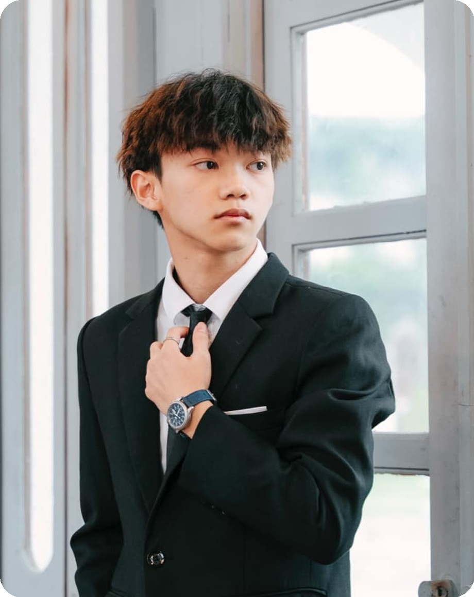

Kết nối trải nghiệm tại quán với nội dung social, kế hoạch marketing và hiện diện số.
NGUYỄN HẢI ANH · PORTFOLIO 2026
Ý tưởng có chất.
Nội dung có hồn.
Tôi kết nối sáng tạo, công nghệ & AI để kể những câu chuyện thương hiệu gần gũi và có sức hút.
MARKETING · DIGITAL · AIHÀ NỘI, VIỆT NAM ↗

CREATIVE MIND.DIGITAL THINKING.
Xin chào, tôi làHải Anh ↗
CONTENT WITH PURPOSE ✳ SOCIAL MEDIA ✳ F&B MARKETING ✳ AI & CREATIVITY ✳ DIGITAL THINKING ✳
01 / DỰ ÁN TIÊU BIỂU
Từ ý tưởng.
Đến thực tế.
Hai thương hiệu F&B.
Những trải nghiệm làm nghề thực tế.
Kể câu chuyện thương hiệu qua nội dung theo mùa, concept hình ảnh và truyền thông sự kiện.
Nhấp vào từng dự án để tìm hiểu vai trò, phạm vi công việc và các kênh thương hiệu.
02 / MỘT CHÚT VỀ TÔI
Tư duy logic.
Cảm hứng sáng tạo.
Tôi là Hải Anh — một người làm marketing có nền tảng Khoa học Máy tính và niềm yêu thích dành cho những câu chuyện thương hiệu.
Từ một ý tưởng nhỏ đến bài đăng, hình ảnh, video hay website, tôi thích trực tiếp tham gia vào quá trình biến ý tưởng thành trải nghiệm thực tế. F&B là nơi tôi bắt đầu, với Xanh Coffee và An Hội An Cà Phê tại Hà Nội.
Tôi sử dụng AI để hỗ trợ nghiên cứu, phát triển ý tưởng và tối ưu quy trình; đồng thời giữ góc nhìn thương hiệu và cảm xúc người xem làm trọng tâm.
ĐỊNH HƯỚNGDigital & Performance Marketing
HỌC VẤN · 2024–NAYSinh viên Khoa học Máy tính
CƠ HỘI MONG MUỐNMarketing / Content · Intern–Junior
03 / TÔI CÓ THỂ ĐÓNG GÓP
Sáng tạo đi cùng
khả năng triển khai.
01Content & Social Media
+
Phát triển ý tưởng, copywriting, lịch nội dung; triển khai caption, hình ảnh và video ngắn cho Facebook / TikTok.
02Marketing & Campaign Planning
+
Lập kế hoạch theo tháng, mùa vụ và dịp cao điểm. Đề xuất concept, ưu đãi, timeline và hỗ trợ lập ngân sách cho hoạt động tại quán.
03Digital Presence & Advertising
+
Xây dựng, quản lý website giới thiệu thương hiệu; nghiên cứu Google Business Profile và quảng cáo TikTok / Google. Theo dõi tương tác để đề xuất điều chỉnh.
04AI & Creative Technology
+
Kết hợp nền tảng công nghệ với AI để hỗ trợ nghiên cứu thị trường, phát triển concept, nội dung, hình ảnh và cải thiện quy trình làm việc.
04 / CÁCH TÔI TIẾP CẬN CÔNG VIỆC
01 / HIỂU
Bắt đầu từ thương hiệu.
Tìm hiểu câu chuyện, khách hàng và bối cảnh kinh doanh.
02 / TẠO
Cho ý tưởng một hình hài.
Phát triển concept và đưa vào nội dung, hình ảnh, video.
03 / TỐI ƯU
Lắng nghe để làm tốt hơn.
Theo dõi phản hồi, điều chỉnh nội dung và tiếp tục thử nghiệm.
BẠN ĐANG TÌM MỘT NGƯỜI ĐỒNG HÀNH?
HÀ NỘI, VIỆT NAMCùng tạo nên
điều thú vị.
Tôi mong muốn tìm cơ hội phát triển trong
Marketing, Digital Marketing và Content.